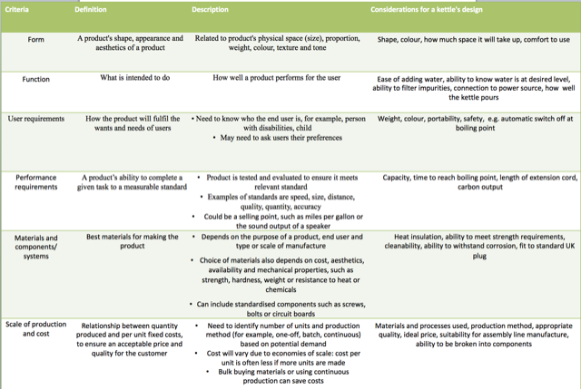

Design and Practice takes place within contexts which inform outcomes
Table of Contents
1 Introduction
Designers use their understanding of the properties of materials and how those materials can be manipulated to inform their design decisions.
Using materials, components and process to inform outcomes One-off
- Properties of materials and components, when choosing materials or components for a design, manufacturers must consider the mechanical or physical properties required to ensure the material will perform the task.
- Mechanical - elements of a material that resist deformation from external forces or loads.
- Physical - elements of a material that can be defined and measured, such as colour, size or weight.

Figure 1: Mechanical and Physical properties
Advantages and disadvantages of materials, components and manufacturing processes
Elements that are analysed:
- Available forms in which the materials and components are supplied.
- Mechanical and physical properties of the materials
- Availablility of the tools, equipment and processes
- Scale of production
- Ease of the materials to process
- Level of waste
- Energy demands in the construction process
- Quantities, cost and availability of the materials
Justifying materials, components and manufacturing processes
The manufacturer can justify why it chose its materials and manufacturing processes in several ways. Below are some examples. This is also covered in topic 1.14.
- Producing tests pieces to prove that the materials have the desired physical and mechanical properties.
- Producing prototypes using manufacturing processes that could have been used for the final product to show how it could be made.
- Producing a full economic case for the product, considerting factors such as the cost of materials and processing, and hidden costs of manufacturing such as labour, lighting, waste and transportation.
- Evaluating the materials and production methods in relation to the environment and society.
2 Summary
Key points to remember:
- Designers need to use understand the key physical and mechanical properties of materials to inform the design decisions.
- Manufacturers need to match materials appropriate manufacturing methods.
- Businesses need to justify their selection of materials and processes before manufacturing begins.
3 Exam questions
- Disposable cutlery is made from high-impact polystrene(HIPS). Give five properties of HIPS and explain why these properties are required in this product.
- Explain two factors that companies may consider whenc choosing a manufacturing process.
- Explain two ways a company could justify their choice of manufacturing process.
- Identify ten products in your home. Use the list of mechanical properities in the above table to identify whci properties are important to these products and why.
- Identify the manufacturing processes involved in the construction of thses ten products and justify why these manufacturing processes were used.